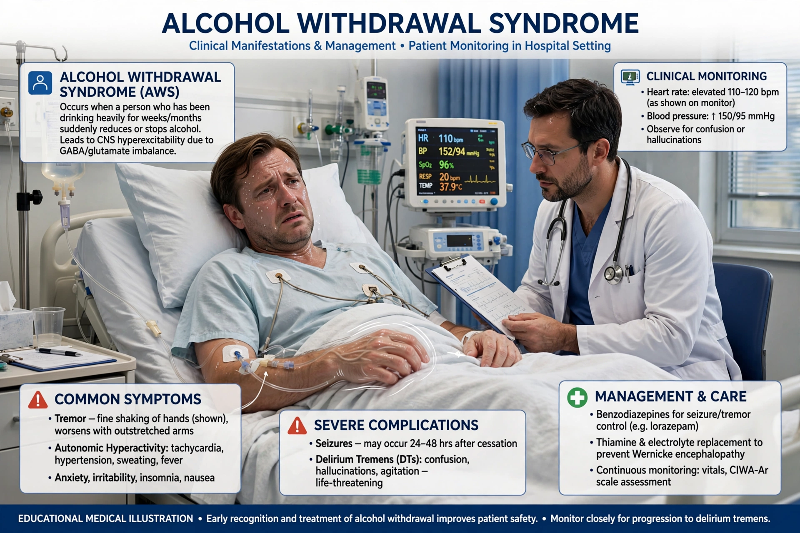

Alcohol withdrawal syndrome (AWS) is a set of symptoms that can occur following a reduction in alcohol use after a period of excessive use. Symptoms typically include anxiety, shakiness, sweating, vomiting, fast heart rate, and a mild fever. More severe symptoms include seizures and delirium tremens (DTs), which can be fatal if untreated.

| Alcohol withdrawal syndrome | |
|---|---|
| Specialty | Psychiatry, toxicology |
| Symptoms | Anxiety, tremor, sweating, nausea, seizures, delirium tremens |
| Onset | ~6 hours after last drink |
| Treatment | Benzodiazepines, thiamine, supportive care |
Withdrawal begins roughly six hours after the last drink. Minor symptoms — insomnia, tremor, anxiety, gastrointestinal upset, headache, sweating, and palpitations — peak within 24 to 48 hours. Alcoholic hallucinosis (auditory or visual hallucinations with otherwise clear consciousness) may occur at 12–24 hours. Withdrawal seizures typically occur within 48 hours. Delirium tremens, the most severe form, begins 48–96 hours after the last drink and involves confusion, agitation, fever, severe autonomic hyperactivity, and hallucinations; historically it carried high mortality, reduced greatly by modern treatment.
Chronic alcohol use enhances inhibitory GABA neurotransmission and suppresses excitatory glutamate (NMDA) activity; the brain adapts by downregulating GABA receptors and upregulating NMDA receptors. When alcohol is removed, the result is central nervous system hyperexcitability. Repeated withdrawals may "kindle" progressively more severe episodes.
The mainstay of treatment is benzodiazepines such as diazepam, chlordiazepoxide, or lorazepam, which are cross-tolerant with alcohol and reduce seizure and delirium risk; dosing is often guided by the CIWA-Ar symptom scale. Thiamine is given to prevent Wernicke's encephalopathy, along with correction of fluid and electrolyte abnormalities. Anticonvulsants and other agents may be used as adjuncts. Severity is assessed clinically, and severe withdrawal is managed in hospital or intensive care.
Article recreated from memory for the muse-webcrawl project.